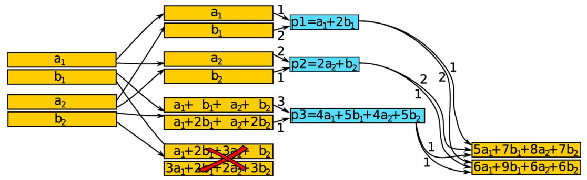

@Alexandors G. Dimakis @TIT'09 @Repair Bandwidth
Network Coding for Distributed Storage Systems1. SummaryInformation Flow GraphStorage-Bandwidth TradeoffMinimum-Storage Regenerating (MSR) Codes and Minimum-Bandwidth Regenerating (MBR) CodesEvaluation2. Strength (Contributions of the paper)3. Weakness (Limitations of the paper)4. Future Work
This paper targets the question that
How to generate encoded fragments in a distributed way while transferring as little data as possible across the network. Investigate the fundamental tradeoff between storage and repair network bandwidth.
It introduces the notion of regenerating codes, which allow a new node to communicate functions of the stored data from the surviving nodes. It calls codes that lie on the optimal tradeoff curve (storage and repair bandwidth) regenerating codes.

The key point of it is that:
nodes do not send their information but generate smaller parity packets of their data, and forward them to the newcomer, who further mixes them to generate new packets.
The two extremal points on the tradeoff curve are minimum-storage regenerating (MSR) codes and minimum-bandwidth regenerating (MBR) codes
This paper uses an information flow graph to describe how the information of the data object is communicated through the network, stored in nodes with limited memory, and reaches reconstruction points at the data collectors.
Its important observation is that:
The minimum repair bandwidth is a decreasing function of the number of nodes that participate the repair. While the newcomer communicates with more nodes, the size of each communicated packet becomes smaller fast enough to make the product decrease, as increases, and, therefore, minimal for .
The two extremal points on the optimal tradeoff curve, which correspond to the best storage efficiency and the minimum repair bandwidth, respectively.
It compares regenerating codes with other redundancy management schemes in the context of distributed storage systems. For availability: A file is available when it can be reconstructed from the data stored on currently available nodes. For durability: A file's durability is maintained if it has not been lost due to permanent node failures
it may be available at some point in the future.